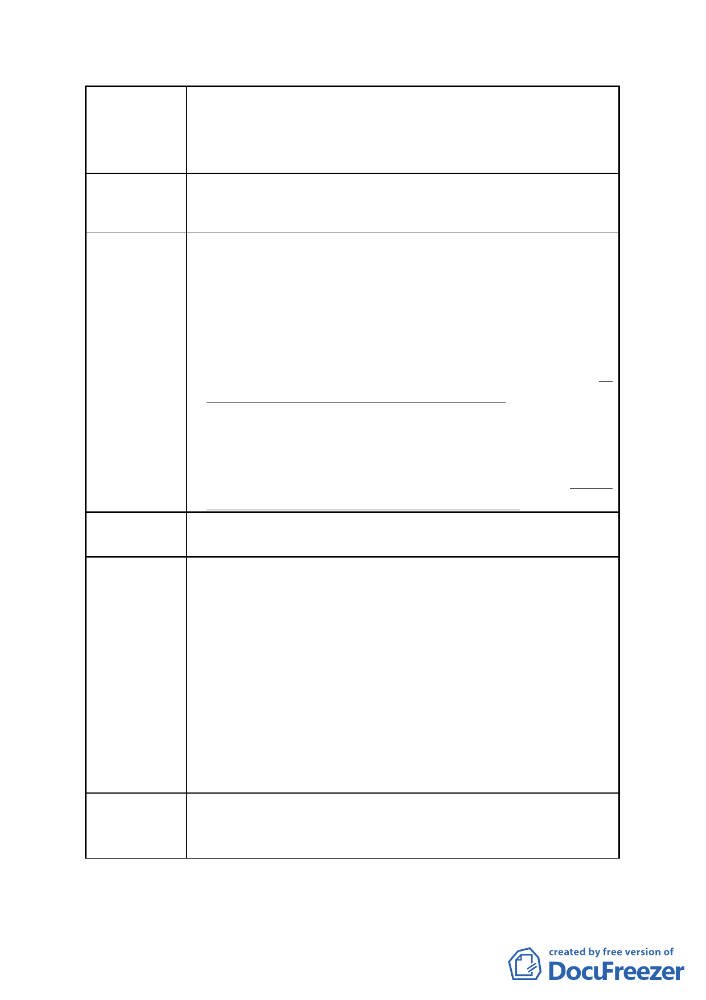

新里族段羊稠小段附近地區都市計畫案』計畫案」都市設計管制要
點，本計畫區內人行空間系統應按附圖 2-2 規定辦理。
惟本計畫基地係包含 21、21-1、22、22-1 四筆地號，指定位置留設
人行空間恐影響基地整體建築配置。
建議辦法 3 建請取消指定位置留設人行空間，僅指定留設之寬度。
市府回應
1.依旨揭陳情地點，陳情內容所述指定位置留設人行空間，應係指旨
揭案附圖 2-2 規定「最小規模基地境界線兩側各退縮 3 公尺留設無
遮簷人行道，得計入公共開放空間」。
2.旨揭計畫之規劃原意，係考量整體開放空間系統及人行動線之串聯
及延續性，倘取消指定留設人行空間，恐將影響行人通行往來區內
及周邊開放空間之便利及權利，再查鄰近開發案業已依前揭計畫案
之都市設計管制要點留設公共開放空間及人行通道，故本開發案仍
建議維持全區開放空間及人行動線之規劃原則。
3.另本計畫案內已載明：「相關都市設計管制要點，悉依本府 97 年 8
月 5 日公告之計畫書規定辦理。並得經本市都市設計及土地使用開
發許可審議委員會審議通過，不受管制要點之規定。」，故本開發
案後續如因建築物配置，確有需要調整都市設計管制規定，得透過
都市設計審議過程，考量全區動線情形予以調整。
委員會決議 依市府回應說明辦理
陳情理由 4
建議辦法 4
使用項目表八 變更土地及建築物使用組別
1.第 37 組之旅遊及運輸服務業變更前於辦公服務區（一） 為允許使
用，變更後並非允許使用，較無法達到 P2 變更緣起與目的之影視
音產業園區首發標的，以發展垂直鏈結、異業結盟提升國際的競爭
力下，將引入影視、文創、娛樂、觀光等複合式產業等目的。
2.有關使用組別之策略性產業、其他經本府產業發展局依「臺北市內
湖輕工業區輔導管理辦法」第四條第五款公告認可之產業於變更後
並非允許使用項目，由於影視音產業範疇較為廣泛，除 貴府政策
公告之基本需求主體事業以建築物樓地板面積 70%以上外，尚有其
餘設施得依都市計畫允許組別規劃，建請考量未來影視音產業之跨
業整合及可能發展，仍維持原允許使用。
建議維持原允許使用組別第 14 組人民團體及第 37 組之旅遊及運輸服
務業、策略性產業、其他經本府產業發展局依「臺北市內湖輕工業區
輔導管理辦法」第四條第五款公告認可之產業。
- 10 -